<!DOCTYPE lake>
<a class="yuque-card-link" href="https://player.bilibili.com/player.html?bvid=BV1LG411D7YQ&amp;p=12&amp;page=12&amp;autoplay=0" rel="noopener noreferrer" target="_blank">thirdparty：thirdparty</a><p data-lake-id="uc399bb43" id="uc399bb43" style="text-align: center">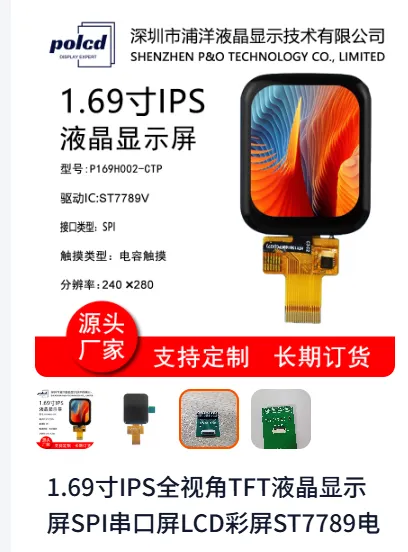</p><p data-lake-id="ueb4c9db8" id="ueb4c9db8"><span data-lake-id="u1b0a2dee" id="u1b0a2dee">参考文档：</span><a data-lake-id="uc3cd4630" href="https://docs.espressif.com/projects/esp-idf/zh_CN/v5.3.2/esp32s3/api-reference/peripherals/lcd/index.html" id="uc3cd4630" rel="noopener noreferrer" target="_blank"><span data-lake-id="uddef1e4e" id="uddef1e4e">https://docs.espressif.com/projects/esp-idf/zh_CN/v5.3.2/esp32s3/api-reference/peripherals/lcd/index.html</span></a></p><p data-lake-id="ub34b282e" id="ub34b282e"><span data-lake-id="u9fb610fc" id="u9fb610fc">参考文档：</span><a data-lake-id="u60ecf076" href="https://github.com/espressif/esp-bsp/blob/master/bsp/esp32_s3_eye/esp32_s3_eye.c" id="u60ecf076" rel="noopener noreferrer" target="_blank"><span data-lake-id="u6d0c2771" id="u6d0c2771">https://github.com/espressif/esp-bsp/blob/master/bsp/esp32_s3_eye/esp32_s3_eye.c</span></a></p><p data-lake-id="uf511cc5b" id="uf511cc5b"><span data-lake-id="u0f9ba4be" id="u0f9ba4be">参考文档：</span><a data-lake-id="u39b21935" href="https://github.com/espressif/esp-who" id="u39b21935" rel="noopener noreferrer" target="_blank"><span data-lake-id="u1b4c7562" id="u1b4c7562">https://github.com/espressif/esp-who</span></a></p><p data-lake-id="u23c6b4da" id="u23c6b4da"><span data-lake-id="uebab2448" id="uebab2448">​</span><br/></p><h2 data-lake-id="RBAZQ" id="RBAZQ"><span data-lake-id="u804f3cda" id="u804f3cda">创建配置文件</span></h2><p data-lake-id="u258651cc" id="u258651cc"><span data-lake-id="uffa46ab7" id="uffa46ab7">sdkconfig.defaults</span></p><span class="yuque-card-unsupported">[codeblock]</span><h2 data-lake-id="CwuDG" id="CwuDG"><span data-lake-id="ub31766f2" id="ub31766f2">新建分区表</span></h2><span class="yuque-card-unsupported">[codeblock]</span><p data-lake-id="uf0fb8c04" id="uf0fb8c04"><span data-lake-id="ucb6c0efe" id="ucb6c0efe">​</span><br/></p><h2 data-lake-id="JmlKe" data-lake-index-type="2" id="JmlKe"><span data-lake-id="u63376d03" id="u63376d03">st7789驱动</span></h2><p data-lake-id="u6ebd0913" id="u6ebd0913"><span data-lake-id="u6eea4920" id="u6eea4920">参考官方LCD的示例代码，我们即可将屏幕跑起来</span></p><p data-lake-id="ube06a23c" id="ube06a23c"><span data-lake-id="uf235e52f" id="uf235e52f">参考连接：</span><a data-lake-id="ud6327944" href="https://github.com/espressif/esp-idf/blob/v5.3.1/examples/peripherals/lcd/spi_lcd_touch/main/spi_lcd_touch_example_main.c" id="ud6327944" rel="noopener noreferrer" target="_blank"><span data-lake-id="u9a62fb0e" id="u9a62fb0e">https://github.com/espressif/esp-idf/blob/v5.3.1/examples/peripherals/lcd/spi_lcd_touch/main/spi_lcd_touch_example_main.c</span></a></p><p data-lake-id="u4a0567a1" id="u4a0567a1"><span data-lake-id="u1a2cb822" id="u1a2cb822">​</span><br/></p><p data-lake-id="u84352bbc" id="u84352bbc"><span data-lake-id="ua582aec4" id="ua582aec4">参考步骤：</span></p><ol list="u9ca8c973"><li data-lake-id="u38c15a62" fid="u4e6c0176" id="u38c15a62"><span data-lake-id="ub8d07ff7" id="ub8d07ff7">复制第1~62行代码到自己的文件中，这几行代码是宏定义配置</span></li><li data-lake-id="u2c836264" fid="u4e6c0176" id="u2c836264"><span data-lake-id="ub626c061" id="ub626c061">复制第206-208行代码到自己文件中，这几行代码是屏幕SPI，IO口的配置</span></li><li data-lake-id="ud08fc938" fid="u4e6c0176" id="ud08fc938"><span data-lake-id="u65c189e3" id="u65c189e3">复制第293-294行代码，点亮背光</span></li></ol><h3 data-lake-id="uFxAV" data-lake-index-type="2" id="uFxAV"><span data-lake-id="u26a07c42" id="u26a07c42">完整示例</span></h3><span class="yuque-card-unsupported">[codeblock]</span><h2 data-lake-id="xwqEC" data-lake-index-type="2" id="xwqEC"><span data-lake-id="u1808b24b" id="u1808b24b">st7789+lvgl驱动</span></h2><p data-lake-id="u5b572769" id="u5b572769"><span data-lake-id="u8c12d780" id="u8c12d780">打开乐鑫官方的开发板仓库，</span><a data-lake-id="uba79450d" href="https://github.com/espressif/esp-bsp/tree/master" id="uba79450d" rel="noopener noreferrer" target="_blank"><span data-lake-id="ue3d9a2e0" id="ue3d9a2e0">https://github.com/espressif/esp-bsp/tree/master</span></a></p><p data-lake-id="ua3fb7e3b" id="ua3fb7e3b"><span data-lake-id="u8b007524" id="u8b007524">我们可以看到里面有很多类型的开发板，选择一个与我们当前项目比较接近的开发板作为参考，例如我们现在只去驱动屏幕，那么我们可以参考</span><strong><span data-lake-id="ub16ab38d" id="ub16ab38d">ESP32-S3-EYE </span></strong></p><p data-lake-id="ue112721d" id="ue112721d">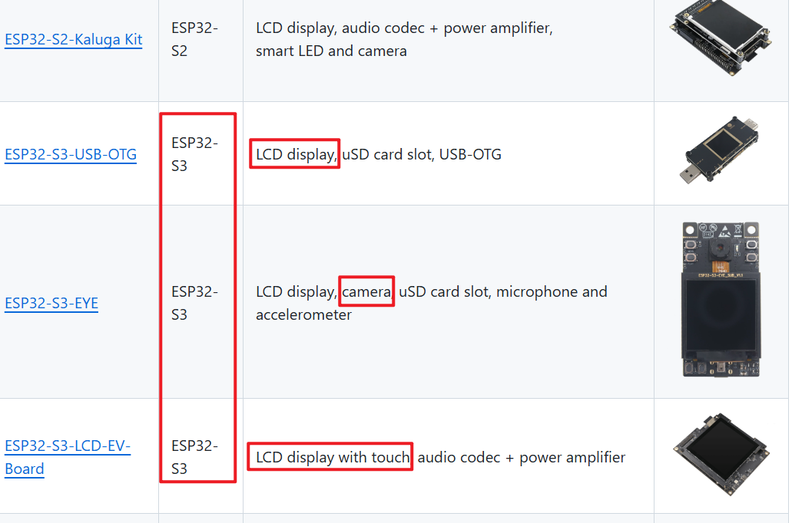</p><h3 data-lake-id="QYrMx" data-lake-index-type="2" id="QYrMx"><span data-lake-id="u9418d11f" id="u9418d11f">添加依赖</span></h3><p data-lake-id="u9764dcf6" id="u9764dcf6"><span data-lake-id="ua578286b" id="ua578286b">参考工程中的idf_component.yml文件，添加响应的依赖</span></p><span class="yuque-card-unsupported">[codeblock]</span><h3 data-lake-id="rBUkE" data-lake-index-type="2" id="rBUkE"><span data-lake-id="u57ed744d" id="u57ed744d">导入头文件</span></h3><span class="yuque-card-unsupported">[codeblock]</span><h3 data-lake-id="cjS83" data-lake-index-type="2" id="cjS83"><span data-lake-id="uc7e37027" id="uc7e37027">复制lvgl配置</span></h3><p data-lake-id="u2c61e174" id="u2c61e174"><span data-lake-id="u9cab2c36" id="u9cab2c36">在我们参考的这个esp32_s3_eye工程</span><a data-lake-id="ucd78bb1b" href="https://github.com/espressif/esp-bsp/blob/master/bsp/esp32_s3_eye/esp32_s3_eye.c" id="ucd78bb1b" rel="noopener noreferrer" target="_blank"><span data-lake-id="ufdd46952" id="ufdd46952">https://github.com/espressif/esp-bsp/blob/master/bsp/esp32_s3_eye/esp32_s3_eye.c</span></a><span data-lake-id="u64735f6d" id="u64735f6d"> 文件的第307~344行代码里面，我们清晰的可以看到关于lvgl相关的配置，我们可以将他们复制到我们自己的工程里面，然后我们还要将它前置的一些调用代码复制过来，例如检查一下bsp_display_new函数里面干的事情我们有没有干。</span></p><p data-lake-id="ufb85aff7" id="ufb85aff7">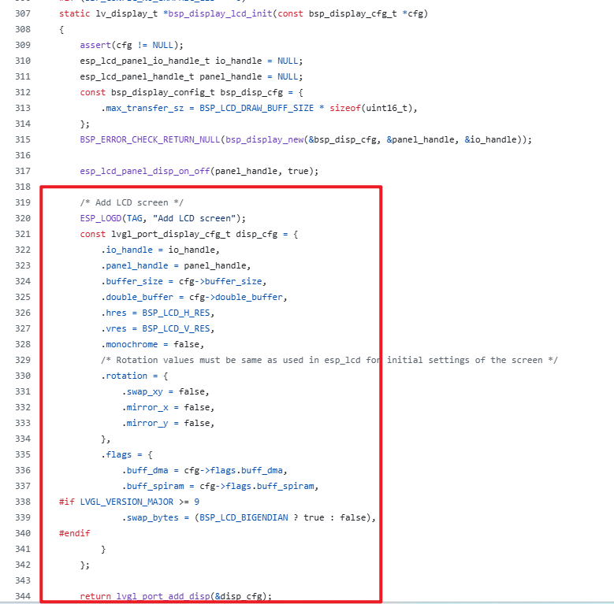</p><p data-lake-id="ub255d0a6" id="ub255d0a6">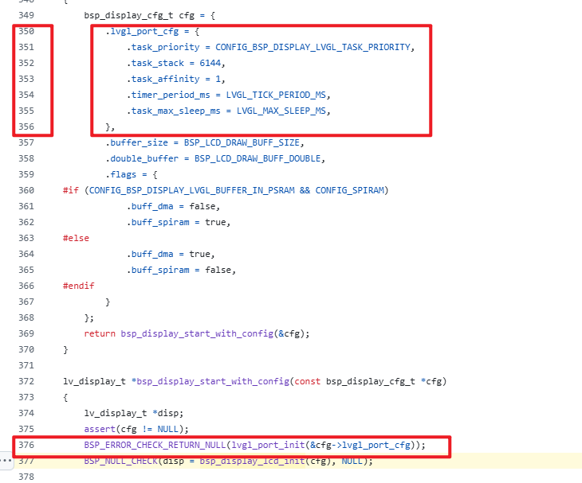</p><p data-lake-id="u66cc2bdc" id="u66cc2bdc"><span data-lake-id="u2c0ae2ee" id="u2c0ae2ee">从上面图我们可以看出，要向将LVGL移植过来，我们需要经历2个步骤：</span></p><ol list="u5a33dc12"><li data-lake-id="uc0c99072" fid="uc4d7f59d" id="uc0c99072"><span data-lake-id="u6d9c4b81" id="u6d9c4b81">初始化lvgl_port_init接口，给他传入相关配置参数</span></li><li data-lake-id="ub5704602" fid="uc4d7f59d" id="ub5704602"><span data-lake-id="u1048749c" id="u1048749c">调用lvgl_port_add_disp，添加显示屏幕相关配置 </span></li></ol><p data-lake-id="u4b2654d2" id="u4b2654d2"><br/></p><span class="yuque-card-unsupported">[codeblock]</span><h3 data-lake-id="RqliT" data-lake-index-type="2" id="RqliT"><span data-lake-id="u9448d021" id="u9448d021">进行menuconfig配置</span></h3><p data-lake-id="ua51d7422" id="ua51d7422"><span data-lake-id="uec1ce6f9" id="uec1ce6f9">搜索LV_MEM增加内存到64K以上</span></p><p data-lake-id="u48291304" id="u48291304">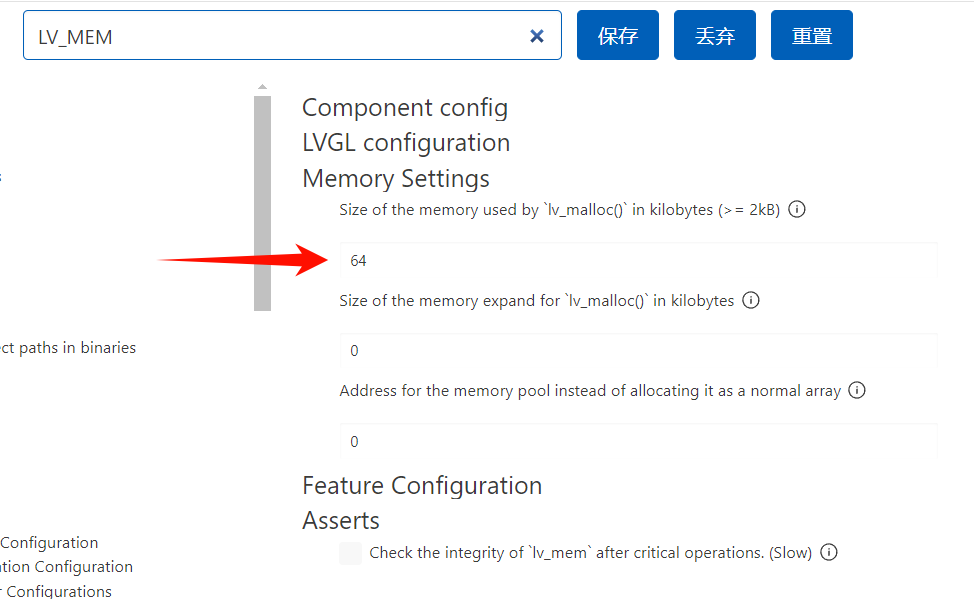</p><p data-lake-id="ub295f4eb" id="ub295f4eb"><span data-lake-id="ua165b938" id="ua165b938">搜索demo，勾选 </span><code data-lake-id="u6d18d79b" id="u6d18d79b"><span data-lake-id="ufa31c391" id="ufa31c391">Show some widget</span></code></p><p data-lake-id="uea62b83d" id="uea62b83d">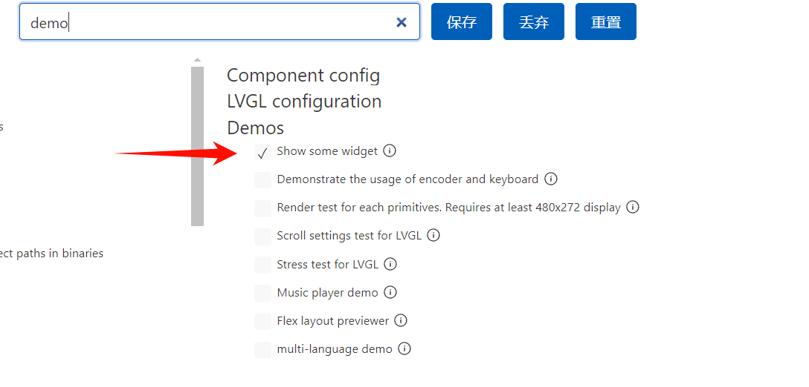</p><p data-lake-id="udb39ad53" id="udb39ad53"><span data-lake-id="ue2c5bec6" id="ue2c5bec6">按照如下选项配置：</span></p><span class="yuque-card-unsupported">[codeblock]</span><p data-lake-id="u11d9d3b4" id="u11d9d3b4"><br/></p><h3 data-lake-id="LmEoi" data-lake-index-type="2" id="LmEoi"><span data-lake-id="ua867a2d0" id="ua867a2d0">显示demo</span></h3><span class="yuque-card-unsupported">[codeblock]</span><p data-lake-id="u450bc7a6" id="u450bc7a6"><br/></p><h3 data-lake-id="eVONZ" data-lake-index-type="2" id="eVONZ"><span data-lake-id="u495e3902" id="u495e3902">完整示例</span></h3><span class="yuque-card-unsupported">[codeblock]</span><h2 data-lake-id="V1XrK" data-lake-index-type="2" id="V1XrK"><span data-lake-id="ua72498f0" id="ua72498f0">st7789+lvgl+cst816驱动</span></h2><p data-lake-id="uab48400e" id="uab48400e"><span data-lake-id="u8911f03e" id="u8911f03e">现在我们要在上一个案例的基础上移植触摸部分，所以仍然去翻看例程, 在例程中找一个带触摸功能的屏幕，例如我们找到</span><strong><span data-lake-id="uee26d45e" id="uee26d45e">M5StackCoreS3</span></strong></p><p data-lake-id="u044daf55" id="u044daf55"><span data-lake-id="ue5ca7201" id="ue5ca7201">参考地址：</span></p><p data-lake-id="u65f972f5" id="u65f972f5"><a data-lake-id="ua3fb8c2b" href="https://github.com/espressif/esp-bsp/blob/master/bsp/m5stack_core_s3/m5stack_core_s3.c" id="ua3fb8c2b" rel="noopener noreferrer" target="_blank"><strong><span data-lake-id="u42b371a8" id="u42b371a8">https://github.com/espressif/esp-bsp/blob/master/bsp/m5stack_core_s3/m5stack_core_s3.c</span></strong></a></p><p data-lake-id="ub8f43700" id="ub8f43700">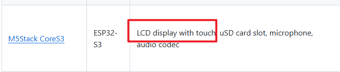</p><p data-lake-id="ua6b24d31" id="ua6b24d31"><span data-lake-id="u108ed0aa" id="u108ed0aa">我们要移植触摸，我们按照如下步骤:</span></p><ol list="ua6fb18ad"><li data-lake-id="u4e94b029" fid="u3beeb1a3" id="u4e94b029"><span data-lake-id="u5165634d" id="u5165634d">初始化I2C设备</span></li><li data-lake-id="ueef67b6f" fid="u3beeb1a3" id="ueef67b6f"><span data-lake-id="u4fc2a77f" id="u4fc2a77f">复制原始的触摸驱动</span></li><li data-lake-id="u3c71a36e" fid="u3beeb1a3" id="u3c71a36e"><span data-lake-id="u71f6f6ac" id="u71f6f6ac">将触摸驱动添加到LVGL中</span></li></ol><h3 data-lake-id="un5iY" data-lake-index-type="2" id="un5iY"><span data-lake-id="uaae17574" id="uaae17574">阅读例程代码</span></h3><p data-lake-id="u9e4b2562" id="u9e4b2562"><span data-lake-id="u3e95158a" id="u3e95158a">注意下图的行号，标红的地方其实就是我们需要去复制的地方</span></p><p data-lake-id="u0c615c6f" id="u0c615c6f">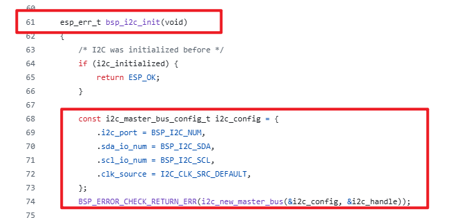</p><p data-lake-id="ucc537d0f" id="ucc537d0f">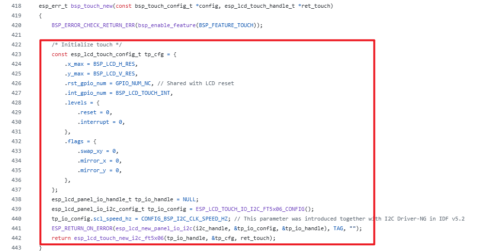</p><p data-lake-id="u0bd57b51" id="u0bd57b51">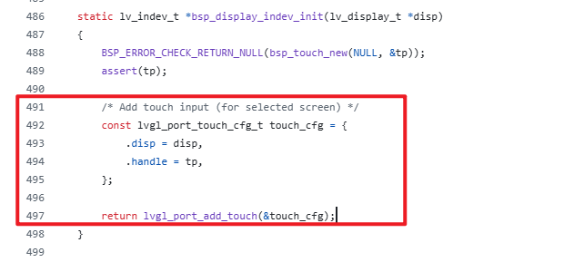</p><h3 data-lake-id="ThjqU" data-lake-index-type="2" id="ThjqU"><span data-lake-id="u68181471" id="u68181471">添加依赖</span></h3><span class="yuque-card-unsupported">[codeblock]</span><h3 data-lake-id="n4FKN" data-lake-index-type="2" id="n4FKN"><span data-lake-id="udbdf6fd5" id="udbdf6fd5">导入头文件</span></h3><span class="yuque-card-unsupported">[codeblock]</span><h3 data-lake-id="cyf8d" data-lake-index-type="2" id="cyf8d"><span data-lake-id="u17e72c4e" id="u17e72c4e">复制cst816配置</span></h3><span class="yuque-card-unsupported">[codeblock]</span><h3 data-lake-id="RpPb9" data-lake-index-type="2" id="RpPb9"><span data-lake-id="u4ad52526" id="u4ad52526">将触摸屏添加到lvgl</span></h3><span class="yuque-card-unsupported">[codeblock]</span><p data-lake-id="u672a34a4" id="u672a34a4"><br/></p><h3 data-lake-id="M29ml" data-lake-index-type="2" id="M29ml"><span data-lake-id="u5591c33e" id="u5591c33e">完整示例</span></h3><span class="yuque-card-unsupported">[codeblock]</span><p data-lake-id="uc0a6d17a" id="uc0a6d17a"><a class="yuque-card-link" href="../../_assets/72b126b531e22944e60bc67f.zip">02-esp32-examples.zip</a></p><h2 data-lake-id="iWQHT" id="iWQHT"><span data-lake-id="ufcf01092" id="ufcf01092">IIC通讯</span></h2><h3 data-lake-id="eupT7" id="eupT7"><span data-lake-id="ubcf1c2f6" id="ubcf1c2f6">初始化</span></h3><span class="yuque-card-unsupported">[codeblock]</span><h3 data-lake-id="tXEDN" id="tXEDN"><span data-lake-id="ube681f72" id="ube681f72">读数据</span></h3><span class="yuque-card-unsupported">[codeblock]</span><h3 data-lake-id="Nh7vY" id="Nh7vY"><span data-lake-id="u66ea306a" id="u66ea306a">写数据</span></h3><span class="yuque-card-unsupported">[codeblock]</span><p data-lake-id="ub8a4b7f9" id="ub8a4b7f9"><br/></p><p data-lake-id="u4d1acf77" id="u4d1acf77"><span data-lake-id="ub44e5231" id="ub44e5231">menuconfig中需要的配置</span></p><p data-lake-id="u3fb7529f" id="u3fb7529f">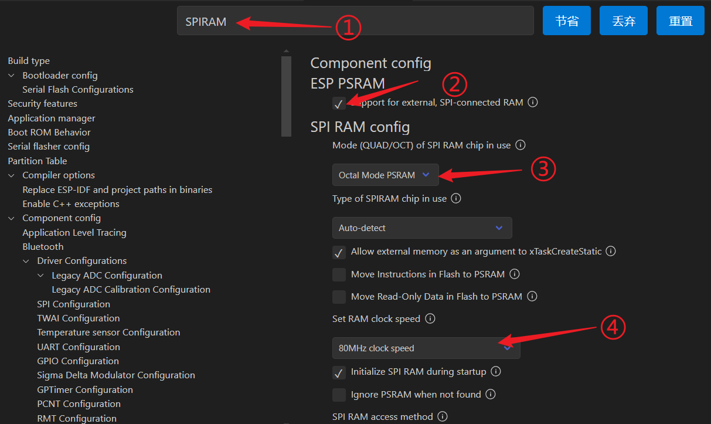</p><p data-lake-id="u3530313d" id="u3530313d"><br/></p>